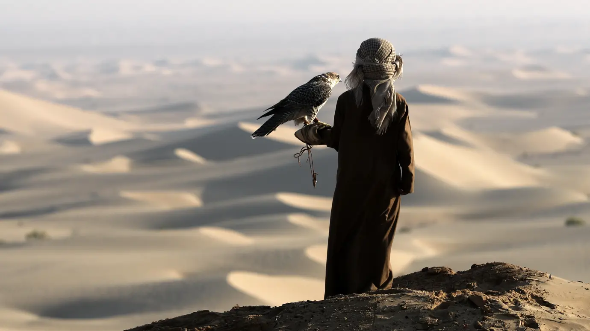
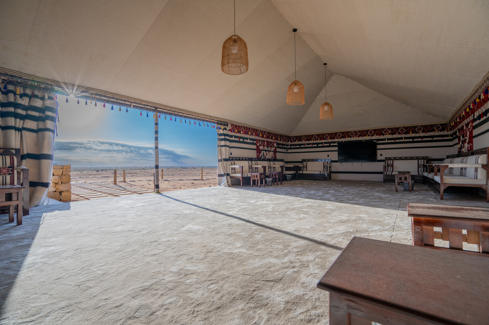
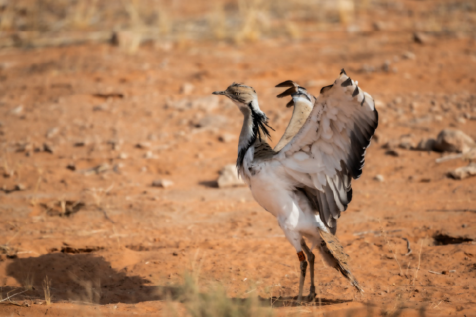
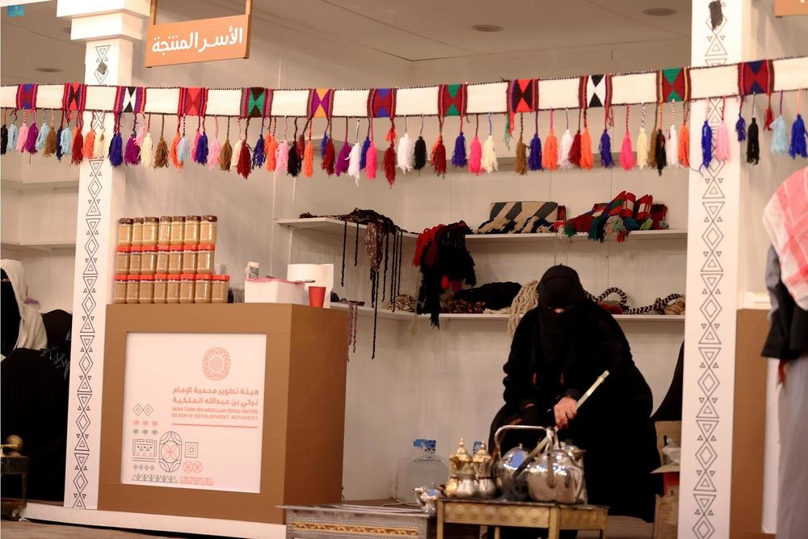
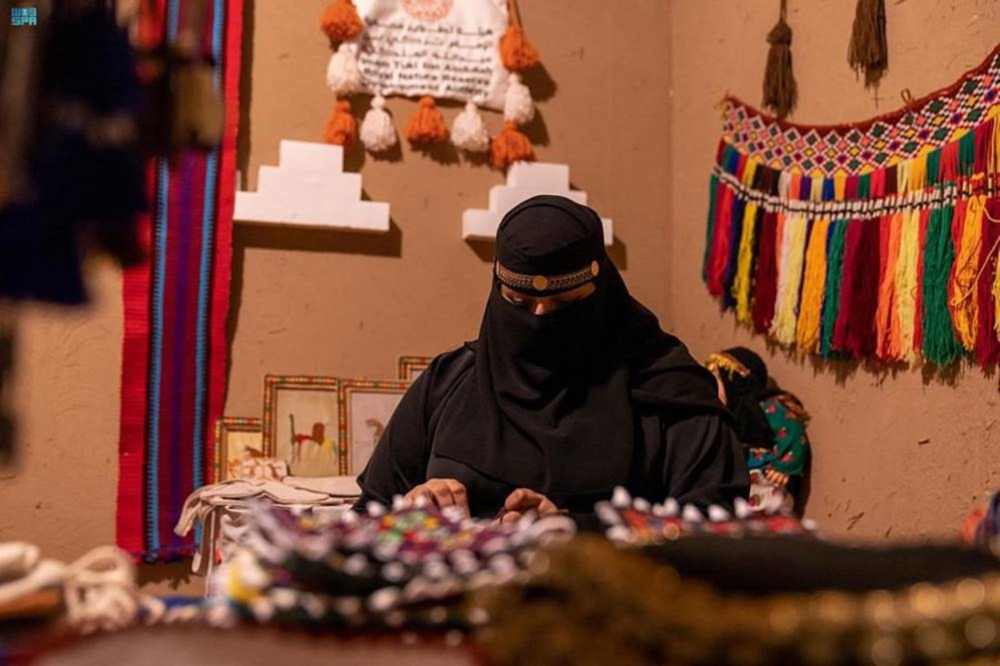
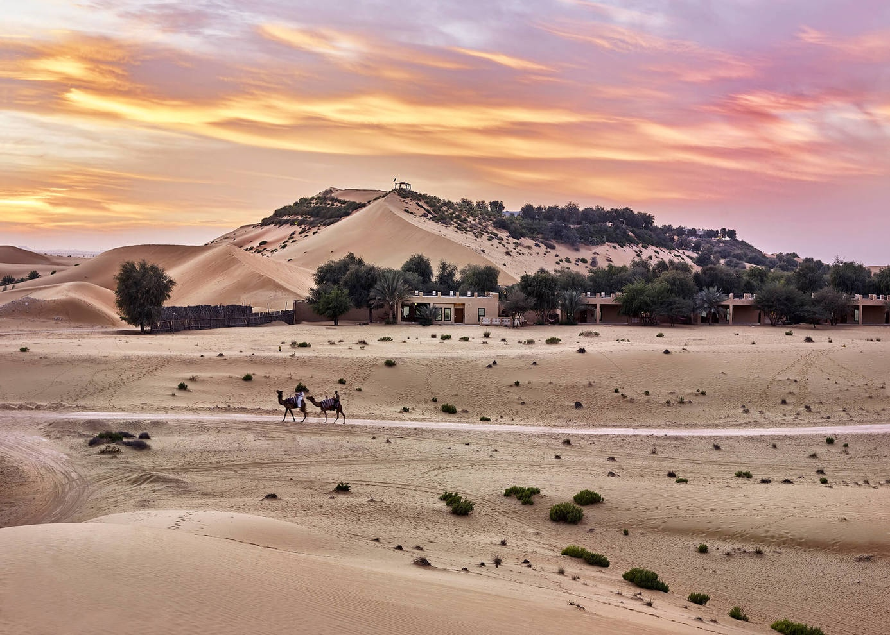
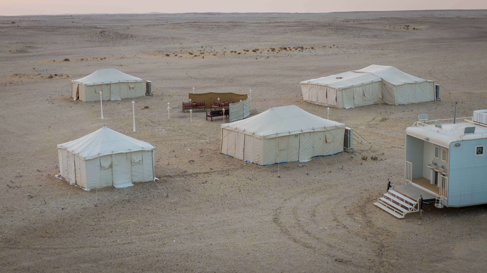
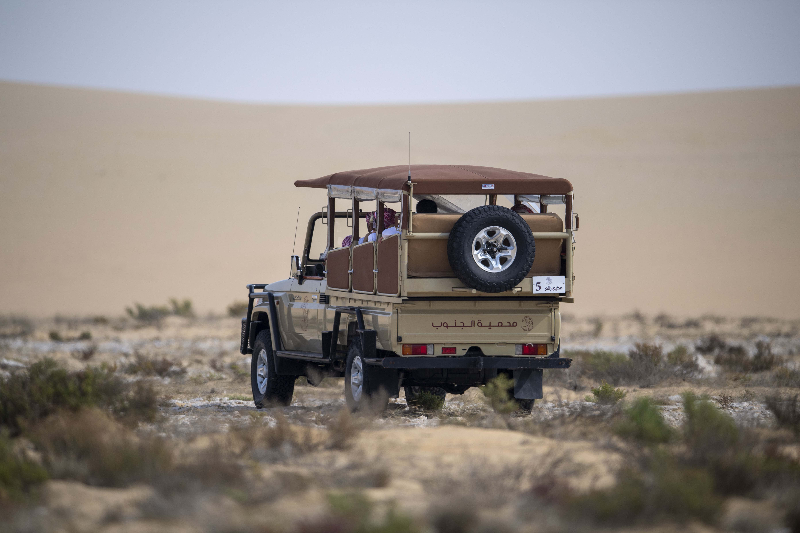

في تحقيق من ثلاث حلقات، تتتبّع «صيد» برامج الصيد السياحي في العالم العربي، من رحلات المقناص إلى خدمات الإقامة والإرشاد والمنتجات المحلية. نبدأ بالخليج، ثم ننتقل إلى المغرب العربي، ونختتم بمصر والعراق والأردن، لاستكشاف صلة هذه التجارب بالسياحة والتنمية المحلية.

مخيمات في الشمال السعودي، وصقور وسلق في الظفرة، وصيد يرتبط بمنتجع في العين، وطرائد من مزارع قطرية. خلف هذه الرحلات تعمل خدمات للإقامة والإرشاد والنقل والإكثار، وتدخل خبرة أهل البر وحرفهم في عرض سياحي له زواره وحجوزاته.
في محمية الشمال السعودية، يستطيع فريق من هواة الصيد اختيار مخيم يتسع لاثني عشر شخصًا، فيه ست خيام للمبيت وبيت شعر وخيمة طعام. وللمجموعات الأكبر مخيم يستقبل واحدًا وثلاثين ضيفًا، بخمس عشرة خيمة مبيت وجناح رئيس ومطبخ ومجالس خارجية. ويرافق الضيوف مرشد متخصص في البيئة والصيد.
هذه تفاصيل رحلة تُبنى حول المقناص: أين يقيم الزائر، ومن يرافقه، وكيف يمضي وقته في البر؟ وتكشف التجربة السعودية، إلى جانب المرزوم وبراري في الإمارات ومحمية الجنوب في قطر، وجوهًا مختلفة لسوق تجمع الصيد بالضيافة، وتمنح الموروث الصحراوي مكانًا في برامج السياحة.
الشمال السعودي: مخيمٌ ومرشدٌ ومنتجات من أهل المنطقة
تأسست محمية الشمال للصيد المستدام عام 2022، وتمتد على نحو ألفي كيلومتر مربع ضمن نطاق محمية الإمام تركي بن عبدالله الملكية. وتتنوع تجربتها بين صيد الحبارى بالصقور، والغزلان بالسلق أو بالأسلحة النارية المخصصة، والمها الوضيحي بالأسلحة النارية، وفق تنظيم المحمية ونوع البرنامج.
وتتدرج الإقامة من المخيمات إلى النزل البيئي، الذي يقدم غرف نوم ومجلسًا ومطبخًا ومساحات جلوس خارجية. يتيح هذا التنوع تنظيم رحلة لمجموعة أصدقاء، أو اختيار إقامة أكثر خصوصية، مع بقاء يوم الصيد وخدمات الضيافة في الوجهة نفسها.

وخلف الطرائد مسار يبدأ قبل وصول الزائر. فقد شرحت الهيئة أن البرنامج يعتمد على إكثار طرائد الصيد وتهيئتها للتأقلم مع البيئة الطبيعية قبل إطلاقها، مع تنظيم الصيد بأعداد محددة. بهذه الآلية يصبح الإكثار والإدارة الميدانية جزءًا من تشغيل الوجهة، إلى جانب المخيمات ومرافقة الضيوف.

وللمجتمع المحلي موقع مباشر في التجربة. خصصت المحمية مكانًا تعرض فيه الأسر المنتجة منتجاتها الشعبية وحرفها اليدوية. وتفتح هذه المساحة صلة بين الزائر وأهل المنطقة، فيتعرف إلى إنتاجهم ويستطيع الشراء منه.
وتعمل الهيئة، على نطاق المحمية الملكية الأوسع، على تدريب أبناء المنطقة في الإرشاد السياحي البيئي والتعامل مع الصقور وإنتاج العسل، ودعم الحرفيين وأصحاب المشاريع الصغيرة. كما يتيح مهرجان شتاء درب زبيدة فرص عمل مؤقتة ومشاركة للأسر المنتجة. ويضع هذا السياق رحلة الصيد ضمن نشاط سياحي أوسع يربط البر بالتراث والأسواق المحلية.


المرزوم: الصقر يقود الرحلة في الظفرة
في منطقة الظفرة بأبوظبي، تحتفظ محمية المرزوم بإيقاع المقناص التقليدي. يتوزع الزوار على فرق ترافقها خبرات ميدانية، ويكون الصيد بالصقور وكلاب السلق، من دون أسلحة نارية. تشمل الطرائد الحبارى والأرانب والظباء، وتُستكمل التجربة بالتنقل داخل المحمية والمبيت في مخيماتها.
هنا يشكل المرشد جزءًا من قيمة الرحلة: معرفة المكان ومرافقة المجموعة وتوجيهها في تجربة تختلف عن جولة مشاهدة الحياة البرية. وتتنوع خيارات المبيت بين المخيم الملكي ومخيم النخبة ومخيم الأفراد، فيما تتيح البيئة الصحراوية للزائر التعرف إلى نباتاتها وكائناتها. وقد استقبلت المحمية، منذ افتتاحها عام 2015، هواة صقارة وسياحًا عربًا وأجانب.
وتضيف تفاصيل الضيافة إلى المقناص طابعًا اجتماعيًا؛ فبإمكان الصقارين أخذ طرائدهم أو طهوها في موقع التخييم، وتشمل أنشطة الوجهة ركوب الجمال والجولات الإرشادية والطهو التقليدي. بذلك تمتد التجربة من ساعات الصيد إلى وقت يقضيه الزوار في المخيم ومع مرافقيهم.
وللمرزوم حضور مبكر في أرشيف «صيد»: غطت المجلة افتتاحها في نوفمبر 2015، ثم وثقت استقبالها صقارين من السعودية وقطر في فبراير 2017 ضمن برنامج لتبادل الخبرات. يضيء هذا المسار على دور الوجهة في جمع هواة المقناص من دول المنطقة حول تجربة مشتركة.
براري في العين: الصيد يدخل عالم المنتجعات
في رماح بالعين، تقدم «براري للصيد» المرتبطة بمنتجع تلال نموذجًا يجمع تجربة الصيد بمرافق الإقامة الصحراوية. وتعرض الجهة المنظمة ثلاثة أنواع من الطرائد: المها العربية، وغزال الريم، والغزال الجبلي المعروف بالدماني. وللحجوزات والاستفسارات الدولية، تدرج وكلاء في إسبانيا ورومانيا، إلى جانب التواصل المباشر مع فريقها في الإمارات.
وأوضح سيف الصالح، مدير الصيد في براري، في حديث إلى «خليج تايمز» نُشر في سبتمبر 2026، أن الجهة توفر الأسلحة والمركبات والإشراف المهني، وأن المشاركين لا يحضرون أسلحتهم الخاصة. وبيّن أن الطرائد المخصصة لهذه التجربة مكاثرة في الأسر، وأن صيدها يجري تحت إشراف هيئة البيئة بأبوظبي. تصبح المعدات والمرافقة، في هذا النموذج، من الخدمات التي يتولاها المشغّل نفسه.
أما منتجع تلال، فيوفر الإقامة وأنشطة تشمل ركوب الجمال والخيل ورحلات السفاري الصحراوية. وتمنح هذه الخيارات المرافقين برنامجًا خاصًا بهم، فيمكن أن تجمع الزيارة أشخاصًا جاؤوا للصيد وآخرين اختاروا الإقامة واستكشاف الصحراء.

وتظهر الصلة بين الصيد والضيافة أيضًا في البنية الاستثمارية للمشروع. تدرج البيانات المالية لمجموعة «ألفا ظبي» لعام 2025 شركة منتجع تلال ضمن شركات «موارد القابضة للاستثمار»، وتجمع أنشطتها المعلنة بين إدارة الفنادق والمنتجعات وتشغيل محميات الصيد الرياضي. إنها صورة واضحة لدخول تجربة الصيد في أعمال السياحة والإقامة.
قطر: رحلة تصل المخيم بالمزرعة
في جنوب قطر، تجمع محمية الجنوب المقناص بالتخييم في أرض تتنوع بين الرمال والصخور والغطاء النباتي. وتبدأ خصوصية النموذج من مصدر الطرائد: تنتجها مزارع قطرية، وتُرقّم وتُطلق تحت معاينة إدارة المحمية. وتوضح وزارة البيئة والتغير المناخي أن هذا التوجه يهدف إلى تخفيف الضغط على الطرائد الطبيعية وإتاحة المجال لتزايدها.
وتعرض المحمية مخيمًا كبيرًا فيه مجلس وأربع خيام للمبيت ومطبخ، وآخر أصغر يضم مجلسًا وخيمتي مبيت ومطبخًا. وتشمل خدماتها سيارات مجهزة لأغراض الصيد، فيما تضم قائمة الطرائد الأرانب والحبارى والكروان والظباء.

ويُحجز البرنامج عبر تطبيق المحمية، وتقتصر وسائل الصيد فيه على الصقور وكلاب الصيد. ومن تفاصيل التشغيل توفير المياه والوقود وخدمات النظافة اليومية ونقل أغراض الزوار إلى المخيمات، مع محلات تجارية في المقر الرئيسي. أما السيارات الخاصة فلا تدخل المحمية، ويخضع التنقل وتنظيم الصيد لتعليمات إدارتها.

تكشف هذه التفاصيل كيف يتوزع العمل حول رحلة واحدة: مزرعة تُنتج الطرائد، وطاقم يجهز المخيم، وخدمة تنقل المتاع، وعاملون يتولون النظافة والإمداد. في هذه الحلقة المحلية تلتقي هواية المقناص بخدمات يحتاجها الزائر طوال إقامته.
أين تصل قيمة الرحلة؟
من الشمال إلى الظفرة والعين وجنوب قطر، تتشابه بعض عناصر التشغيل وتختلف شخصية التجربة. للصقور وكلاب الصيد حضور أساسي في المرزوم والجنوب، وتتعدد الوسائل في الشمال، فيما يضيف نموذج براري خدمات الصيد المجهز إلى الإقامة في المنتجع. وتتيح هذه الفروق للصياد أن يختار بين رحلة ترتكز على الموروث، وإقامة جماعية في المخيم، وتجربة تجمع الصيد بخدمات فندقية.
وتتوزع قيمة الرحلة بين الإقامة والنقل والإرشاد المتخصص والوجبات وتجهيزات المخيم، إلى جانب أعمال إكثار الطرائد وإدارة إطلاقها. وتضيف مشاركة الأسر المنتجة في الشمال مسارًا يصل إنفاق الزائر بالحرفة والمنتج المحلي.
وتتسع فرصة الوجهة حين يجد المرافقون ما يفعلونه أيضًا. فرحلات الجمال والخيل واستكشاف الطبيعة والإقامة الصحراوية تمنح الرحلة أنشطة أخرى، وتتيح مشاركة الأسرة أو الأصدقاء باهتمامات مختلفة. هنا تبرز أهمية تنظيم البرنامج كاملًا: الصيد يجذب الهواة، والضيافة تجعل المكان صالحًا لإقامة يقضيها معهم آخرون.
تقدم هذه التجارب الخليجية ملامح عملية لسياحة الصيد: مكان معلوم، ومشغّل يتولى الخدمات، وطرائد ووسائل محددة، وإقامة مرتبطة بالبرنامج. وفي قلبها يبقى أهل الخبرة، من المرشد والصقار إلى العامل في الإكثار والضيافة والحرفي. عندهم تتحول تفاصيل الرحلة إلى عمل، ويجد الموروث طريقًا إلى اقتصاد المكان.
المصادر: وكالة الأنباء السعودية، هيئة تطوير محمية الإمام تركي بن عبدالله الملكية، مكتب أبوظبي الإعلامي، وزارة التغير المناخي والبيئة الإماراتية، وزارة البيئة والتغير المناخي القطرية، الجهات المشغّلة، وأرشيف صيد.
في الحلقتين المقبلتين
- الصيد السياحي في دول المغرب العربي
- الصيد السياحي في مصر والعراق والأردن